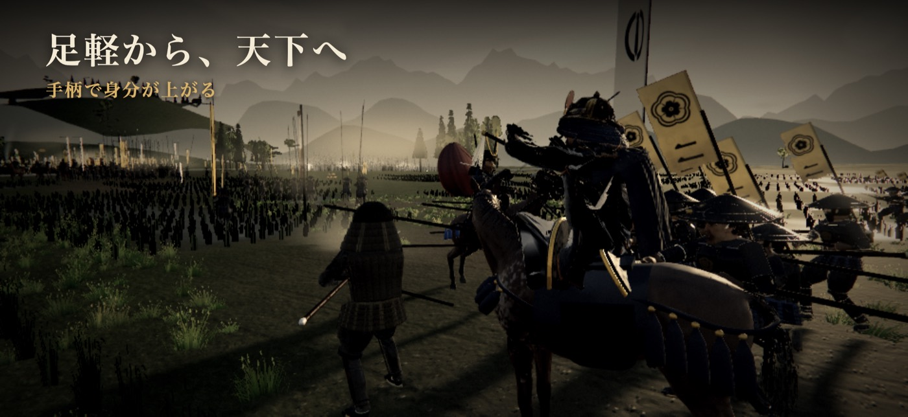
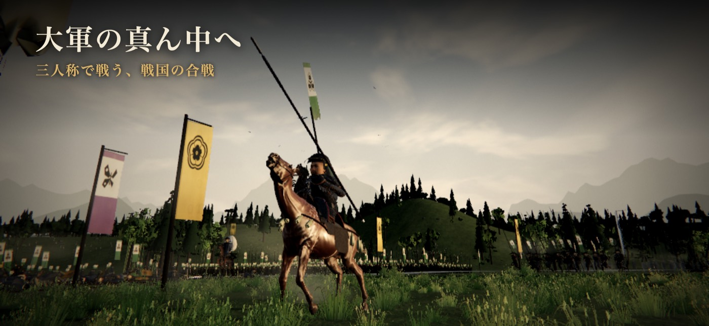
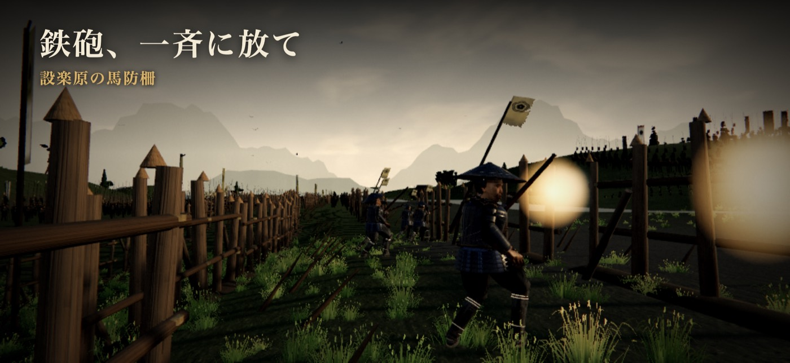
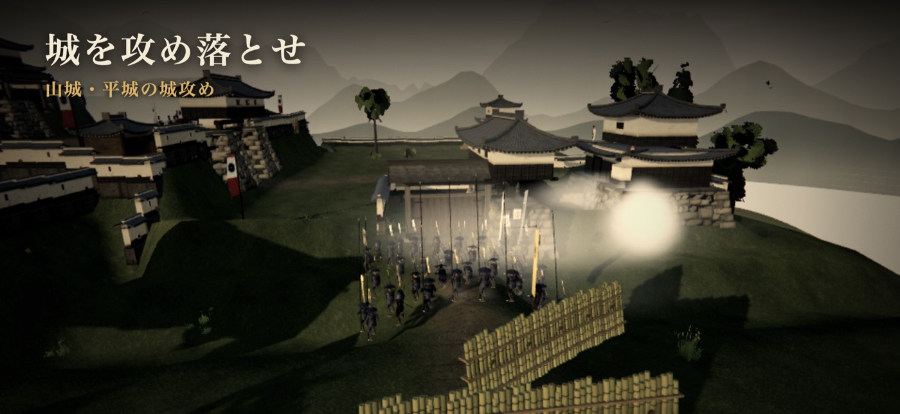
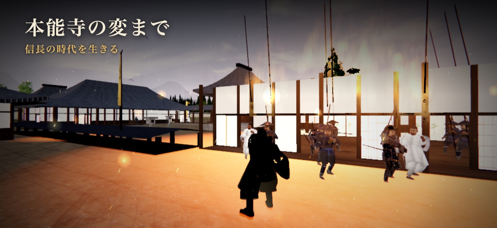
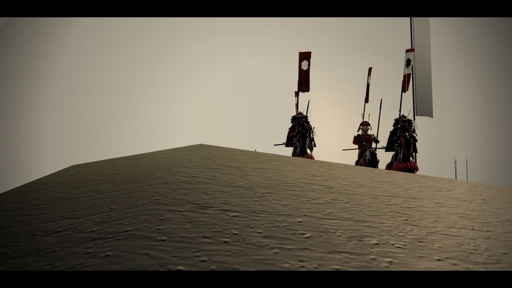
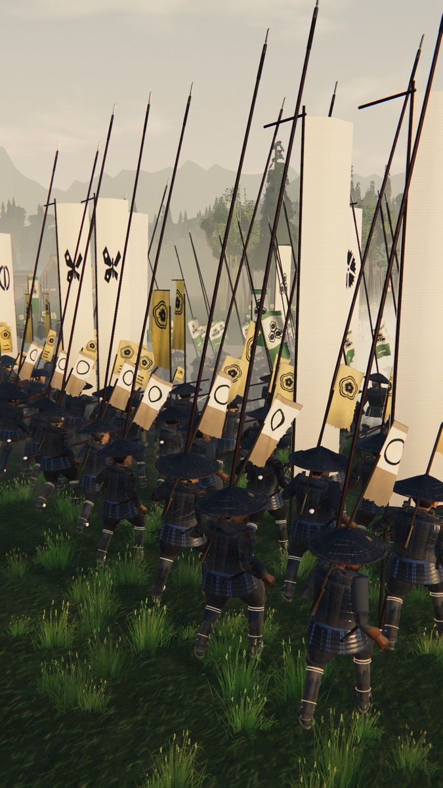

物語
名もなき足軽が、
天下を見る。
永禄三年、桶狭間。大雨の中、あなたは織田家の足軽として槍を握る。手柄を立てれば、組を率い、馬に乗り、やがて城を持つ。信長の三十一の戦を越えた先に、本能寺の朝が待つ。

- 足軽
- 足軽組頭
- 足軽大将
- 侍大将
- 部将
- 家老
- 城主
- 国持大名
- 戦国大名
- 天下人
織田家編で戦いながら届くのは、足軽大将まで。その先の身分は「出世の道」で姿を見て、稽古場で試せます。
物語
永禄三年、桶狭間。大雨の中、あなたは織田家の足軽として槍を握る。手柄を立てれば、組を率い、馬に乗り、やがて城を持つ。信長の三十一の戦を越えた先に、本能寺の朝が待つ。

織田家編で戦いながら届くのは、足軽大将まで。その先の身分は「出世の道」で姿を見て、稽古場で試せます。
合戦
旗が揺れ、槍の列が押し合い、鉄砲の煙が流れる。数千の軍勢がぶつかる戦場を、足軽の目の高さで駆ける。

姉川・三方ヶ原・設楽原。川や野で、何千もの兵が押し合う野戦。

設楽原の馬防柵。煙の向こうから迫る武田の騎馬へ、一斉に放つ。

稲葉山・小谷・高遠。門を破り、曲輪を一つずつ奪って本丸へ。

夜明け前、寺を囲む明智の軍勢。炎の中で、最後まで上様を守る。
年表
戦の前には年と場所、戦の後には史実の一言。野で押し合う戦、城攻め、退く味方を守る戦、砦を築く戦、船の戦。三十一の戦は、場所も役目も変わります。押すと、その戦の攻略が開きます。
城と城下

武将と家臣
藤吉郎のもとで砦を築き、光秀と山門を破り、勝家と殿を務める。供の者を雇い、家臣を連れて戦に出る。
尾張の風雲児。既存の権威を意に介さず、鉄砲と経済を武器に天下布武を掲げた。
針売りから身を起こした異例の出世頭。人たらしの才で戦わずして城を落とす。
諸国を流浪する牢人。教養と兵法に通じ、いずれ天下を揺るがすことになる。
「かかれ柴田」と呼ばれた織田家随一の猛将。北陸方面の司令官を務めた。
三河の若き当主。今川の人質から身を起こし、忍耐の末に天下を得る。
信玄の四男。長篠で宿老を失い、なお織田・徳川と渡り合う。
毘沙門天の化身と呼ばれた戦国最強の武将。義によって戦い領土欲はなかった。
「槍の又左」と呼ばれた傾奇者。秀吉とは古くからの友人で、加賀百万石の礎を築いた。
遊び方
パソコンはキーとマウス、ゲームパッドでも遊べます。操作の一覧
問い
かかりません。Web 版は登録なしで、すぐに遊べます。
iPhone・Android・iPad・パソコンのブラウザで遊べます。携帯は横向きで遊んでください。
いま公開の準備をしています。それまでは Web 版で、同じ戦を遊べます。
4〜7 分ほどです。すきま時間に一戦ずつ遊べます。
遊んだ端末の中に残ります。同じ端末・同じブラウザで続きから遊べます。
画質は端末に合わせて自動で整えます。重い時は、設定の「画質」を下げてください。
攻略に、戦ごとの任務の流れと勝ち方のこつがあります。
